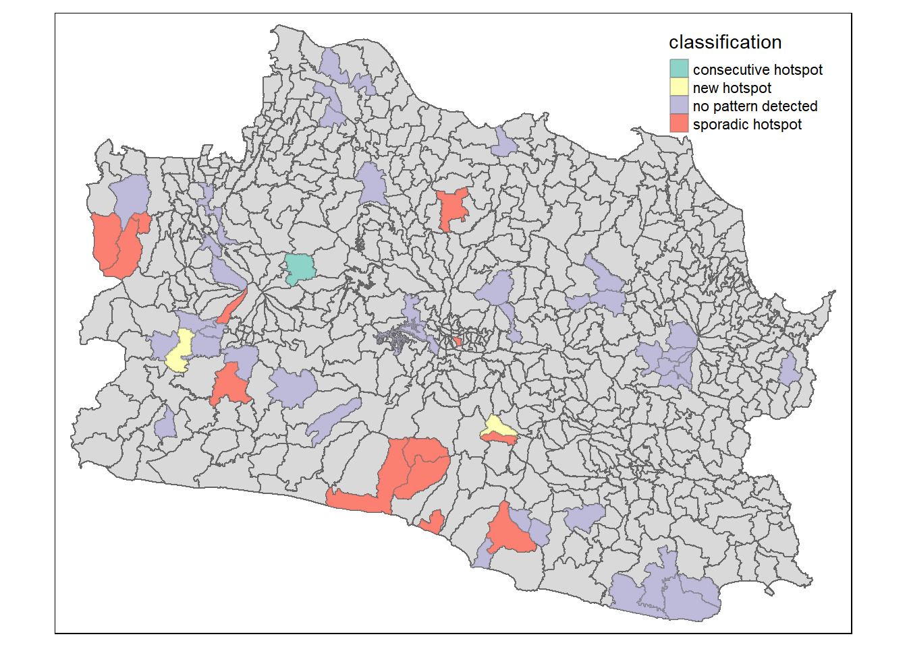

pacman::p_load(sf, spded, sfdep, tmap, tidyverse, plotly, Kendall)Take-home Exercise 3: Spatio-temporal Analysis Methods to Discover the Distribution Eathquake Events in West Java, Indonesia
Setting the Background
Indonesia is located in a seismically active region known as the Pacific Ring of Fire, where several tectonic plates meet. This makes the country highly susceptible to earthquakes, volcanic eruptions, and tsunamis.Indonesia experiences frequent seismic activity, ranging from minor tremors to major earthquakes with significant magnitudes. Understanding the frequency and magnitude of these events is crucial for assessing their impact on local communities, infrastructure, and the environment.
Datasets
| Dataset | Description | Source |
|---|---|---|
idn_abm_bps_20200401-shp |
A shape file of Indonesia’s bourndaries, segmented into different levels of granularity. In this analysis, we will use level 3 which are the subdistricts. | https://data.humdata.org/dataset/cod-ab-idn?# |
katalog_gempa.csv |
CSV dataset of all earthquake events from 1 Nov 2008 to 26 Jan 2023a | https://github.com/kekavigi/repo-gempa |
Installing Packages into R Environment
Aspatial Data
indo_earthquake <- read_csv("data/aspatial/katalog_gempa.csv")head(indo_earthquake)# A tibble: 6 × 13
tgl ot lat lon depth mag remark strike1 dip1 rake1 strike2
<date> <time> <dbl> <dbl> <dbl> <dbl> <chr> <dbl> <dbl> <dbl> <dbl>
1 2008-11-01 21:02:43 -9.18 119. 10 4.9 Sumba… NA NA NA NA
2 2008-11-01 20:58:50 -6.55 130. 10 4.6 Banda… NA NA NA NA
3 2008-11-01 17:43:12 -7.01 107. 121 3.7 Java … NA NA NA NA
4 2008-11-01 16:24:14 -3.3 128. 10 3.2 Seram… NA NA NA NA
5 2008-11-01 16:20:37 -6.41 130. 70 4.3 Banda… NA NA NA NA
6 2008-11-01 14:47:00 -7.37 105. 18 3.3 Java … NA NA NA NA
# ℹ 2 more variables: dip2 <dbl>, rake2 <dbl>Given that latitude and longitude data are available for each earthquake event, we aim to transform this geospatial information into a spatial feature (sf) object. Additionally, we intend to convert the coordinate reference system (CRS) of the data to EPSG code 23830, which corresponds to the geographical region of Indonesia.
# Convert to sf object
indoEarthq_sf <- st_as_sf(indo_earthquake, coords = c("lon", "lat"), crs = "+proj=longlat +datum=WGS84") # Transform the geometry to EPSG:23830
indoEarthq_sf <- st_transform(indoEarthq_sf, crs = "+init=EPSG:23830")plot(st_geometry(indoEarthq_sf))In this code chunk, we aim to identify the Indonesian regions experiencing the highest frequency of earthquake events, thereby providing valuable insights into the spatial distribution and patterns of seismic activity within the country.
# Group by the 'remark' column and calculate the count of each type
remark_counts <- indoEarthq_sf %>% group_by(remark) %>%
summarise(count = n())
# View the resulting count of each type in the 'remark' column # Sort the data frame by count in descending order and select the top 10 rows
top_10_remark <- remark_counts %>%
arrange(desc(count)) %>%
head(10)
# Plot a bar graph
ggplot(top_10_remark,
aes(x = remark, y = count)) +
geom_bar(stat = "identity", fill = "skyblue") +
labs(title = "Top 10 Region Eathquake Count",
x = "Region",
y = "Count") +
theme_minimal() +
theme(axis.text.x = element_text(angle = 45, hjust = 1))The bar chart reveals that the Java region exhibits a notably high frequency of seismic events. Considering that West Java have a larger population, these seismic occurrences could potentially have a more significant impact on the local communities.
Geospatial Data
indonesia <- st_read(dsn = "data/geospatial/idn_adm_bps_20200401_shp",
layer = "idn_admbnda_adm3_bps_20200401")Reading layer `idn_admbnda_adm3_bps_20200401' from data source
`C:\jaymieseet\IS415-GAA-JS\Take-home_Ex\Take-home_Ex03\data\geospatial\idn_adm_bps_20200401_shp'
using driver `ESRI Shapefile'
Simple feature collection with 7069 features and 16 fields
Geometry type: MULTIPOLYGON
Dimension: XY
Bounding box: xmin: 95.01079 ymin: -11.00762 xmax: 141.0194 ymax: 6.07693
Geodetic CRS: WGS 84In this section, we are filtering out only the regions within West Java from our shapefile to focus our analysis.
west_java <- indonesia[indonesia$ADM1_EN == "Jawa Barat", ]west_java <- st_transform(west_java, crs = 23830)plot(st_geometry(west_java))
Some subdistricts may share the same name but belong to different districts. To ensure uniqueness in our analysis, we concatenate both the subdistrict and district names together to create a distinct identifier.
west_java$subdistrict <- paste(west_java$ADM3_EN, west_java$ADM2_EN, sep = "_")After obtaining the subdistrict polygons, we use the st_intersection() function to overlay these polygons onto the earthquake points. This process allows us to associate each earthquake point with the corresponding subdistrict polygon, thereby adding the subdistrict information to the earthquake data.
java_earthq <- st_intersection(indoEarthq_sf, west_java)
java_earthqSimple feature collection with 1384 features and 28 fields
Geometry type: POINT
Dimension: XY
Bounding box: xmin: 1522045 ymin: 614269.8 xmax: 1792451 ymax: 816381.6
Projected CRS: DGN95 / Indonesia TM-3 zone 46.2
# A tibble: 1,384 × 29
tgl ot depth mag remark strike1 dip1 rake1 strike2 dip2
* <date> <time> <dbl> <dbl> <chr> <dbl> <dbl> <dbl> <dbl> <dbl>
1 2015-03-13 17:23:27 15 2.9 Java - Ind… NA NA NA NA NA
2 2016-01-11 16:58:36 18 2.9 Java - Ind… NA NA NA NA NA
3 2016-11-30 08:00:24 60 3.2 Java - Ind… NA NA NA NA NA
4 2017-08-09 04:57:31 111 3.6 Java - Ind… NA NA NA NA NA
5 2018-01-03 03:49:07 110 3.3 Java - Ind… NA NA NA NA NA
6 2018-01-26 12:40:02 96 3 Java - Ind… NA NA NA NA NA
7 2020-03-22 20:27:05 91 3.5 Java - Ind… NA NA NA NA NA
8 2022-09-03 02:29:58 109 2.5 Java - Ind… NA NA NA NA NA
9 2023-01-11 05:20:19 16 2.5 Java - Ind… NA NA NA NA NA
10 2015-03-28 10:25:24 10 3.3 Java - Ind… NA NA NA NA NA
# ℹ 1,374 more rows
# ℹ 19 more variables: rake2 <dbl>, Shape_Leng <dbl>, Shape_Area <dbl>,
# ADM3_EN <chr>, ADM3_PCODE <chr>, ADM3_REF <chr>, ADM3ALT1EN <chr>,
# ADM3ALT2EN <chr>, ADM2_EN <chr>, ADM2_PCODE <chr>, ADM1_EN <chr>,
# ADM1_PCODE <chr>, ADM0_EN <chr>, ADM0_PCODE <chr>, date <date>,
# validOn <date>, validTo <date>, subdistrict <chr>, geometry <POINT [m]>length(unique(java_earthq$subdistrict))[1] 248We aim to focus our analysis on earthquake events with a magnitude of 3 or higher. This threshold ensures that we concentrate on seismic events that are more significant and potentially impactful on the affected areas, disregarding lower magnitude events that may have minimal consequences.
java_earthq <- java_earthq %>%
filter(mag >= 3) %>%
mutate(year = as.numeric(year(tgl)),
month = month(tgl, label = TRUE, abbr = FALSE),
week = as.numeric(week(tgl))) %>%
mutate(year_week = paste(year, paste("Week", week, sep = " "), sep = ", ")) %>%
filter(year >= 2009, year <= 2023)tmap_mode('plot')
tm_shape(west_java)+
tm_polygons()+
tm_shape(java_earthq)+
tm_dots()
Emerging Hotspot Analysis
For our spatio-temporal analysis, we will examine the annual patterns spanning a duration of 15 years.
java_earthq_count <- java_earthq %>%
group_by(subdistrict, year) %>%
summarize(total_cases = n()) %>%
ungroup() %>%
st_drop_geometry()length(unique(west_java$subdistrict))[1] 630sum(duplicated(west_java$ADM3_EN))[1] 46Creating a time series cube
Here, we are checking for any years that do not have any recorded earthquake cases and assigning a count of 0 to those years.
# Create a vector of all years
years <- as.numeric(2009:2023)
# Create a template dataframe with all possible combinations of regions, years, and months
template_df <- expand.grid(subdistrict = unique(west_java$subdistrict),
year = years,
stringsAsFactors = FALSE)
# Left join with original dataframe
java_eq_df <- left_join(template_df, java_earthq_count, by = c("subdistrict", "year"))
# Replace NA values in total cases column with 0
java_eq_df$total_cases[is.na(java_eq_df$total_cases)] <- 0java_eq_df <- as_tibble(java_eq_df)java_st <- spacetime(.data = java_eq_df, .geo = west_java, "subdistrict", "year")
is_spacetime_cube(java_st)[1] TRUEComputing Gi*
Deriving the Spatial Weights
java_nb <- java_st %>%
activate("geometry") %>%
mutate(nb = include_self(st_contiguity(geometry)),
wt = st_inverse_distance(nb, geometry,
scale = 1,
alpha = 1),
.before = 1) %>%
set_nbs("nb") %>%
set_wts("wt")gi_stars <- java_nb %>%
group_by(year) %>%
mutate(gi_star = local_gstar_perm(
total_cases, nb, wt)) %>%
tidyr::unnest(gi_star)Mann-Kendall Test
This code snippet generates a time series plot showing the Green Index (GI) variation over the years for a specific subdistrict. Users can choose the subdistrict they want to analyze by changing the value in the filter function. The resulting plot is interactive, allowing users to hover over data points to view specific values and trends.
cbg1 <- gi_stars %>%
ungroup() %>%
filter(subdistrict == "Cugenang_Cianjur") |>
select(subdistrict, year, gi_star)
p <- ggplot(data = cbg1,
aes(x = year,
y = gi_star)) +
geom_line() +
theme_light()
ggplotly(p)cbg1 %>%
summarise(mk = list(
unclass(
Kendall::MannKendall(gi_star)))) %>%
tidyr::unnest_wider(mk)# A tibble: 1 × 5
tau sl S D varS
<dbl> <dbl> <dbl> <dbl> <dbl>
1 0.276 0.166 29 105. 408.Usrs can choose to overlay a line representing the mean GI across all subdistricts. This allows users to compare the GI trend of the selected subdistrict to the average GI trend across all subdistricts, helping identify any anomalies or subdistricts with GI values higher or lower than the average.
mean_gi <- gi_stars %>%
group_by(year) %>%
summarize(mean_gi_star = mean(gi_star, na.rm = TRUE))
cbg1 <- gi_stars %>%
ungroup() %>%
filter(subdistrict == "Cugenang_Cianjur") |>
select(subdistrict, year, gi_star)
p <- ggplot() +
geom_line(data = cbg1, aes(x = year, y = gi_star), color = "blue") +
geom_line(data = mean_gi, aes(x = year, y = mean_gi_star), color = "red", linetype = "dashed") +
theme_light()
ggplotly(p)ehsa <- gi_stars %>%
group_by(subdistrict) %>%
summarise(mk = list(
unclass(
Kendall::MannKendall(gi_star)))) %>%
tidyr::unnest_wider(mk)emerging <- ehsa %>%
arrange(sl, abs(tau)) %>%
slice(1:5)Performing Emerging Hotspot Analysis
ehsa <- emerging_hotspot_analysis(
x = java_st,
.var = "total_cases",
k = 1,
nsim = 99
)Visualising the distribution of EHSA classes
ggplot(data = ehsa, aes(x = classification)) +
geom_bar() +
theme(axis.text.x = element_text(angle = 45, hjust = 1))java_ehsa <- west_java %>%
left_join(ehsa,
by = join_by(subdistrict == location))Visualising EHSA
This map displays various hotspots detected through a spatial analysis technique. Users have the flexibility to adjust the p-value parameter, which influences the sensitivity of hotspot detection. By modifying the p-value, users can perform different types of analyses, such as identifying significant clusters or exploring spatial patterns at varying levels of statistical significance. Adjusting this parameter allows users to customize the analysis based on their specific research objectives or hypotheses.
ehsa_sig <- java_ehsa %>%
filter(p_value < 0.1)
tmap_mode("plot")
tm_shape(java_ehsa) +
tm_polygons() +
tm_borders(alpha = 0.5) +
tm_shape(ehsa_sig) +
tm_fill("classification") +
tm_borders(alpha = 0.4)
EDA
For this EDA, I used tmaps package to plot the points of the earthquake events, the colour of the points are coloured based on the magnitude of the earthquake event. A colour palette (palette = “Reds”) was selected to intuitively convey the severity of earthquakes, with darker shades representing higher magnitudes.
The primary goal is to gain insights into the distribution and characteristics of these seismic events, as well as visualise the change of events across the 15 year period (2009 to 2023).
The different parameters we can choose is the time period:
display by year
display by month
display by week of year
show all events
Show all events
This map below shows all events of earthquake from 2009 to 2023.
tmap_mode('view') # Define basemaps
osm_basemap <- tm_basemap(server = "OpenStreetMap.HOT")
imagery_basemap <- tm_basemap(server = "Esri.WorldImagery")
eo_map <- osm_basemap +
tm_shape(java_earthq) +
tm_symbols(size = 0.8, col = "mag", palette = "Reds", alpha = 1,
popup.vars = c("subdistrict", "year_week"), id = "mag") +
tm_layout(title = "Earthquake Events Magnitude") +
tm_view(dot.size.fixed = TRUE)
eo_mapFilter by Year and Week
Since I’ve incorporated a new column indicating the year and week of each earthquake event, we can implement a slider feature to visualize the evolution of earthquake occurrences throughout the year. As the slider moves across different weeks, the map dynamically updates to display earthquake events for the selected week. If there are no earthquake events recorded for a particular week, the map gracefully renders as empty, providing a clear representation of seismic activity over time.
Given the relatively sparse occurrence of earthquake events within a week, I opted to increase the size of each plotted point to enhance visibility and highlight the significance of each seismic event. By adjusting the size parameter to a higher value of 5, the resulting map provides a clearer and more pronounced representation of earthquake occurrences, ensuring that even minor seismic events are readily discernible to viewers.
tmap_mode('view') # Define basemaps
osm_basemap <- tm_basemap(server = "OpenStreetMap.HOT")
imagery_basemap <- tm_basemap(server = "Esri.WorldImagery")
filter_date <- "2010, Week 48"
# Filter the dataset based on the specific year_week value
filtered_data <- java_earthq %>%
filter(year_week == filter_date)
if (nrow(filtered_data) == 0) {
# If no rows are filtered, create an empty map or a message
empty_map <- osm_basemap +
tm_shape(java_earthq) +
tm_symbols(alpha = 0, size = 0) + # Added '+' to separate tm_symbols() from tm_layout()
tm_layout(title = paste("No earthquake events for ", filter_date)) # Corrected tm_layout() function
empty_map
} else {
# If rows are filtered, create the map with the filtered dataset
eo_map <- osm_basemap +
tm_shape(filtered_data) +
tm_symbols(size = 5, col = "mag", palette = "Reds", alpha = 1,
popup.vars = c("subdistrict", "year_week"), id = "mag", breaks = seq(3, 6.5, by = 0.5)) +
tm_layout(title = paste("Earthquake Events Magnitude for ", filter_date)) # Corrected tm_layout() function
eo_map
}Filter by Year and Month
The filter can also be set by Year and Month.
tmap_mode('view') # Define basemaps
osm_basemap <- tm_basemap(server = "OpenStreetMap.HOT")
imagery_basemap <- tm_basemap(server = "Esri.WorldImagery")
filter_year <- 2010
filter_month <- "January"
# Filter the dataset based on the specific year_week value
filtered_data <- java_earthq %>%
filter(year == filter_year,
month == filter_month)
if (nrow(filtered_data) == 0) {
# If no rows are filtered, create an empty map or a message
empty_map <- osm_basemap +
tm_shape(java_earthq) +
tm_symbols(alpha = 0, size = 0) + # Added '+' to separate tm_symbols() from tm_layout()
tm_layout(title = paste("No earthquake events for ", filter_date)) # Corrected tm_layout() function
empty_map
} else {
# If rows are filtered, create the map with the filtered dataset
eo_map <- osm_basemap +
tm_shape(filtered_data) +
tm_symbols(size = 5, col = "mag", palette = "Reds", alpha = 1,
popup.vars = c("subdistrict", "year_week"), id = "mag", breaks = seq(3, 6.5, by = 0.5)) +
tm_layout(title = paste("Earthquake Events Magnitude for ", filter_date)) # Corrected tm_layout() function
eo_map
}